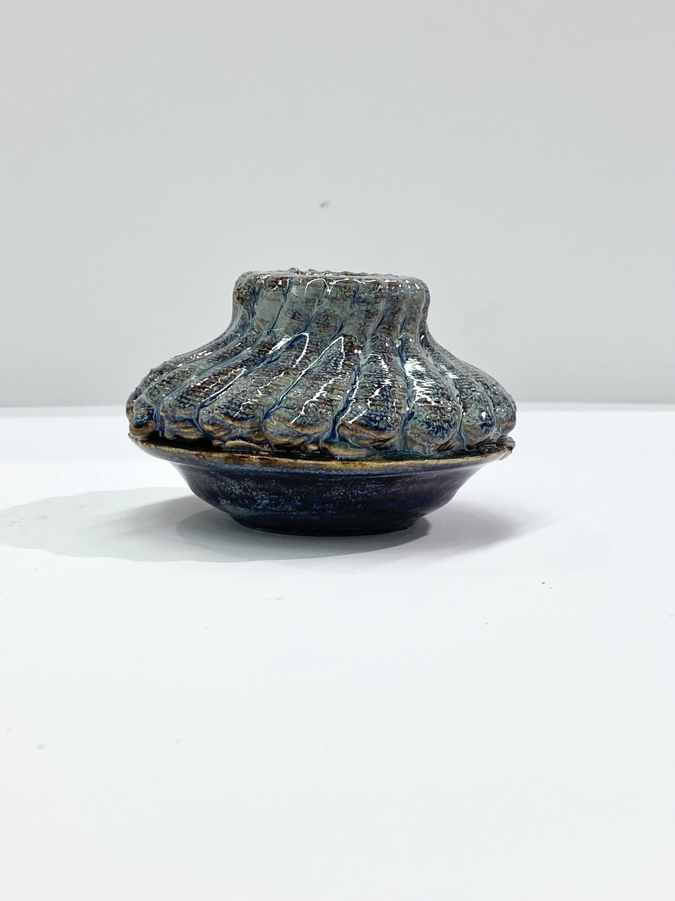
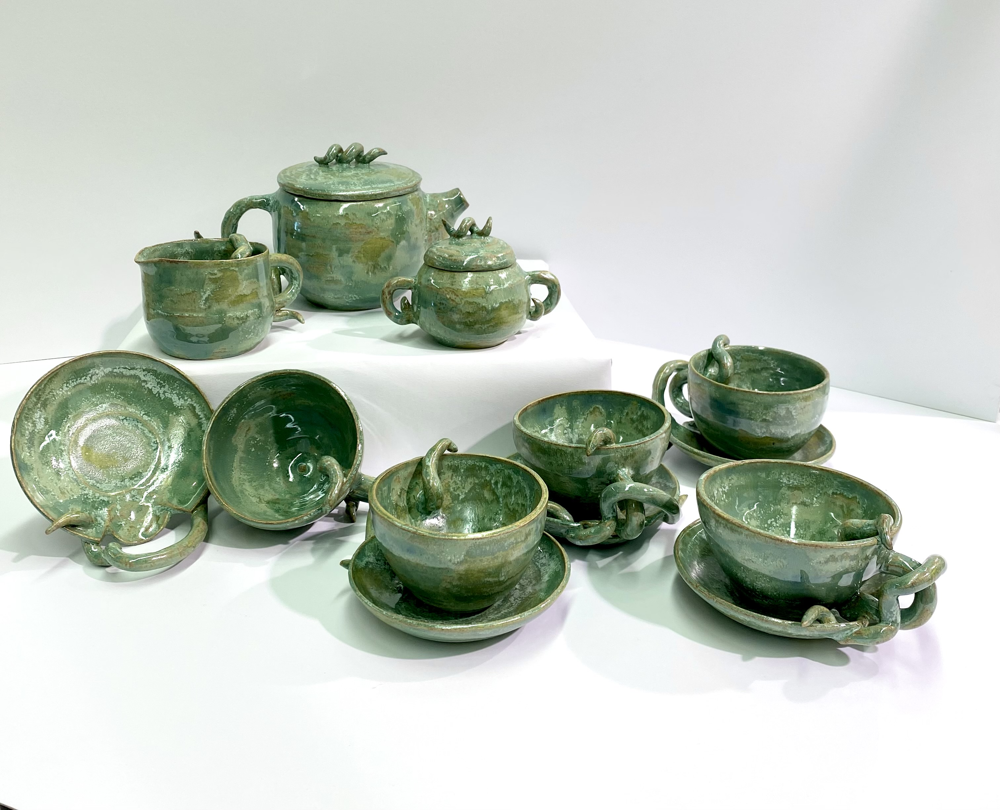
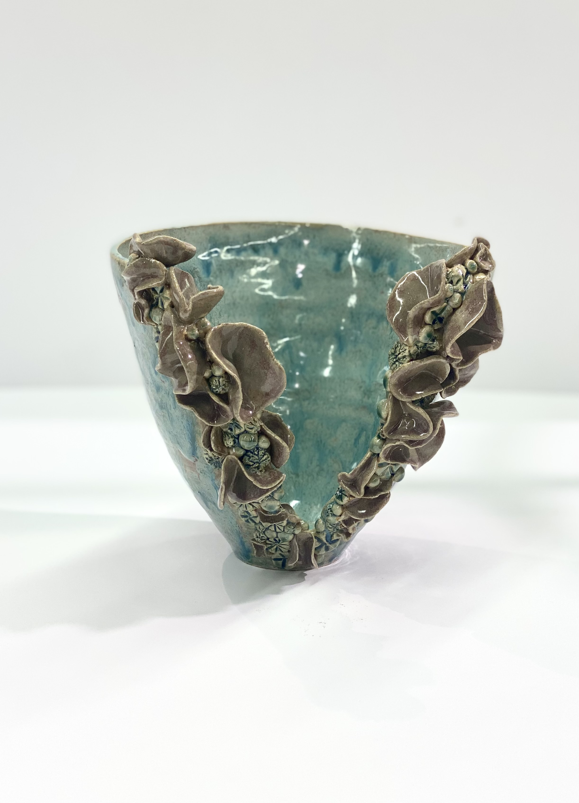
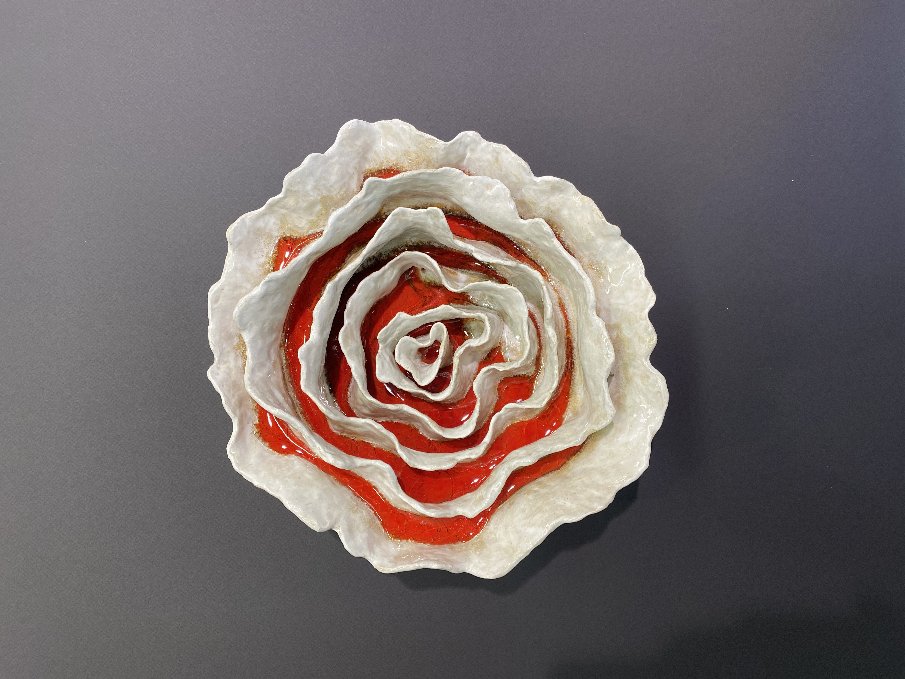
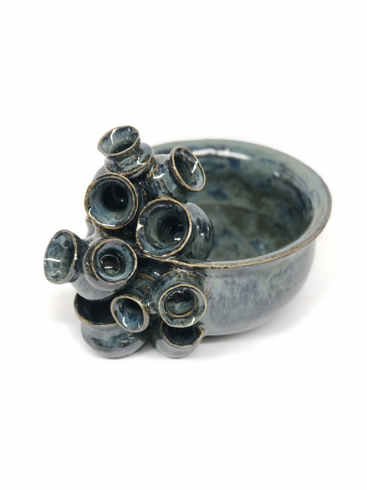
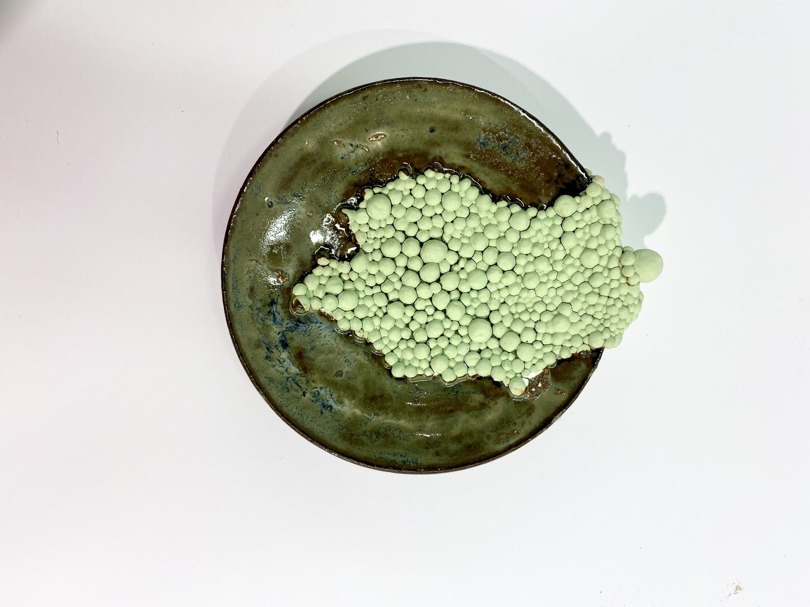
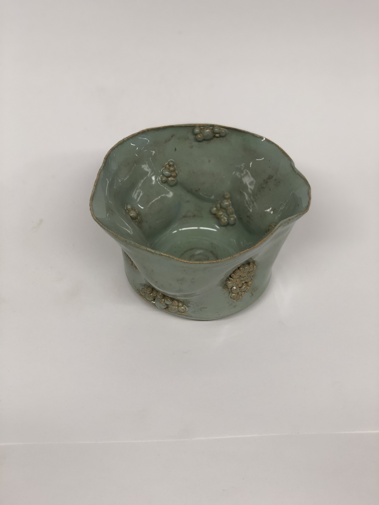
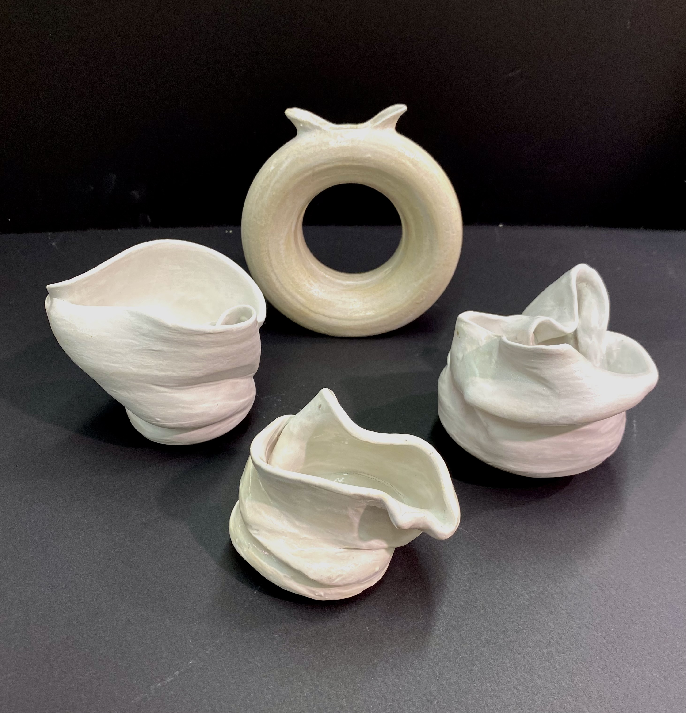
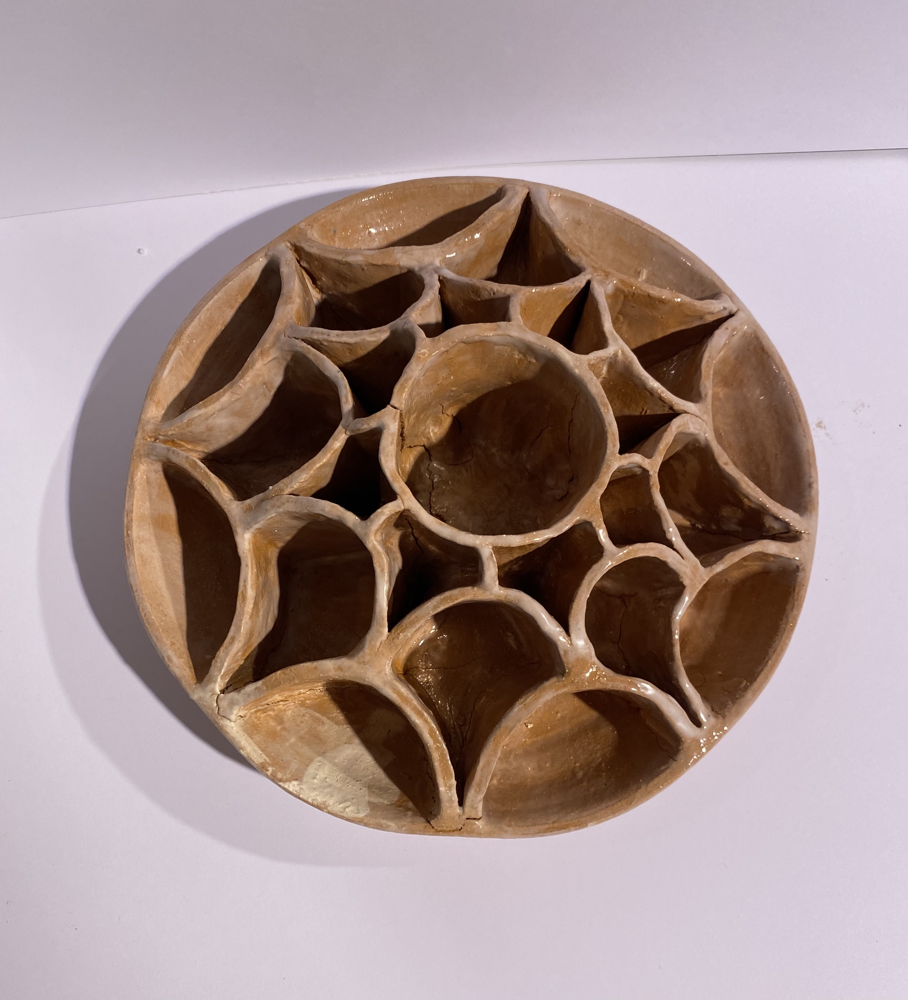

Glaze Fired
Click the images to reveal the names and descriptions.

History Meets Technology
- Material(s): 192 Baldwin Special stoneware, 3D potter, smokey merlot, arctic blue glaze
- Process(es): The 3D Potter used on top of a thrown piece shows the way technology is permeating classic ceramics

The Tea Set
- Idea(s): Nuancing a typical ceramic function with whimsical detail
- Material(s): T-6B white stoneware, extruder, dark green, frosted melon glaze
- Process(es): Wheel thrown pieces and hand-built entanglement of handles

Disfunctional Vase
- Idea(s): Cutting out a section of a traditional vase and experimenting with details
- Material(s): T-6B white stoneware, toasted sage, dark green glaze
- Process(es): Wheel throw vase, delicacy and randomness of small details, highlighted by glaze compliment and contrast

Oceanic Growth
- Idea(s): Applying the movement of Noriko Kuresumi’s oceanic structures with integrity of growth and motion
- Material(s): 192 Baldwin Special stoneware, red glass, China white underglaze, clear glaze
- Process(es): Layers of varied, unfinished growth and a contrasting glass inside

Pot Family
- Idea(s): To use the same exact shape in different sizes to create a reproduction of pots nested on a host
- Material(s): 192 Baldwin Special stoneware, blue midnight over iron lustre glaze
- Process(es): Wheel thrown repetition and positive feedback in a typical ceramic form

Moldy Plate
- Material(s): 192 Baldwin special stoneware, apple green underglaze, blue rutile glaze
- Process(es): Inspired by mold growth and Kathleen Ryan, this plate has clay mold and glaze to contrast texture and color

Infested Bowl
- Material(s): 192 Baldwin Special stoneware, arctic blue over textured turquoise glaze
- Process(es): Clusters of delicate, small bubbles represent the typical pattern of invasive species hiding

Set of Misfits
- Material(s): Porcelain, China white underglaze, clear glaze
- Process(es): Stubbornness of porcelain inspires mistakes and deformity to create abstract art

Grass Planter
- Idea(s): To bring in nature and place it inside an intricate planter to show sustainability
- Material(s): Brown stoneware, clear glaze, grass
- Process(es): Uses the earthy style of Terracotta to create the pattern and planted grass seed throughout